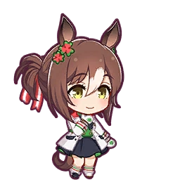
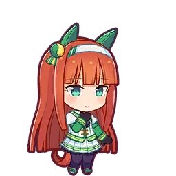
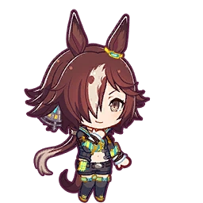
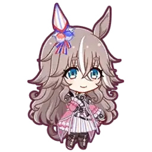

Trivias
Ever wondered about the little details and fun facts about your favorite umamusume? This section is dedicated to sharing interesting trivia about the characters, their backgrounds, and the world of Umamusume.
Ever wondered about the little details and fun facts about your favorite umamusume? This section is dedicated to sharing interesting trivia about the characters, their backgrounds, and the world of Umamusume.

Agnes Tachyon
Did you know? The real life Agnes Tachyon had a perfect race record, winning 4 of the 4 races he participated in.
The term "tachyon" refers to a theoretical particle that exceeds the speed of light.
In the game, Tachyon's objective after clearing the Satsuki Sho defaults to the Japanese Derby. However, if her mood following the Satsuki Sho is Normal or worse, her objective race will change to the NHK Mile. Tachyon's Mile aptitude is D, making it hard for her to complete the objective, let alone winning it without proper Mile aptitude inheritance.
This branching path is meant to represent the career of the real-life Tachyon, who was forced to retire due to injury after only four races, his last being the Satsuki Sho.

Daiwa Scarlet
The real life Daiwa Scarlet was the first mare in 37 years to win the Arima Kinen in 2008.
Her jockey and caretakers often called her "dumb" because she often goes full power at the start until the end of the race, neglecting stamina management.
Unfortunately, she was retired after developing flexor tendonitis, which many believes that she inherited some of Agnes Tachyon's genes.

El Condor Pasa
El Condor Pasa has been titled one of the best Japanese race horse in the 20th century.
In the game, her favorite things are spicy food and watching pro wrestling. Her hobby is playing the flamenco guitar.
The horse was named after the Peruvian musical play "El Cóndor Pasa" because the owner had a respected peer from university who spent time in Peru.
The real life El Condor Pasa almost won the Prix de l'arc de Triomphe in 1998 - losing 1st place to Montjeu. Until today, no Japanese racehorse has ever won the prestigious race in France.

Fine Motion
Fine Motion was an Irish-bred thoughbred racehorse.
She loves ramen. This is a character quirk invented by Cygames and doesn't have a specific real-life inspiration.
Fine Motion is the only cast member to have no distinct ear accessory. This is due to the fact that the real horse was found to have chromosomal abnormalities causing her to be intersex, and because ear accessory determines the real horse's sex, her clover pins have no distinction. It is importantly to note that in real life, after the discovery of her chromosomal abnormalities, Fine Motion was not disqualified from any filly-only races.

Gold Ship
Gold Ship was known for his unpredictable temperament, which is reflected in the game of her doing silly actions.
She has her own YouTube channel called PakaTube (ぱかチューブっ!).
Many believe the real life Gold Ship understands English, being able to sense emotions and intentions through body language and vocal cues.
Gold Ship had a staggeringly high breeding rate of 99.1% in 2019, which is considered one of the highest at the time.
Gold Ship was known for the "12 Billion Yen Incident", which refers to the 2015 Takarazuka Kinen, Gold Ship was the 2.1/1 favorite, acted up in the gate, reared, and started seconds late, finishing 15th. This caused roughly 12 billion yen ($135 million) in betting tickets to become worthless, cementing his reputation as a chaotic, unpredictable, but beloved legend.

Grass Wonder
Grass Wonder was a racehorse born in the late 1990s, which is also the golden age of horse racing.
Her relationship to Maruzensky is a reference to real-life Grass' racing days.
In Grass Wonder's Career path, she races in the Japanese Derby as she aims to escape Maruzensky's shadow. In real life, Maruzensky never competed in the Derby and was prohibited from doing so despite protests.
Grass Wonder was regarded as the second coming of Maruzensky.

Haru Urara
Haru Urara was a Japanese Thoroughbred racehorse who achieved a record of zero wins and 113 losses in a career spanning from 1998 to 2004. Her unbroken losing streak was covered by Japanese media in 2003, causing her to achieve national popularity as a symbol of perseverance and tenacity.
Urara's racing outfit is based on ordinary sportwear.
Kochi Racecourse hosts races up to the level of Jpn3, and so it wasn't possible for her to run G1 races.
In Japanese horseracing hosted at the Local, racing silks depend on the horse's jockey, not owner. Many jockeys rode on Haru Urara, and so she doesn't have a fixed racing silk. The color scheme of her outfit actually comes from the mask that she wore in real life, which was pink and white. Her owners also decorated it with Hello Kitty patches.

Silence Suzuka
Silence Suzuka was known for his incredible front-running speeds, which the locals tend to call it the "runaway" strategy.
In real life, Silence Suzuka passed away following the 1998 Tenno Sho Autumn after it was determined that the leg fracture he sustained in the race was too severe, and he was euthanized. However, in Umamusume, Suzuka's fate and relationship with the race differs.
In the Pretty Derby anime, Silence Suzuka fractures her leg in the race, but recovers and is able to continue racing.
In the mobile game's Career Mode, Silence Suzuka's final objective is to win the Autumn Tenno Sho. When she wins, the special commentary noted above plays.

Special Week
Special Week is the main character of the Umamusume anime in Season 1.
In real life, Special Week's mother died five days after he was born, Special Week was raised by a draft horse and hand-fed by staff. This caused him to be very comfortable with humans but indifferent to other horses.
He was a huge eater and knew exactly which staff members would feed him treats like carrots and apples, often rushing to greet them.
He won the 1998 Japanese Derby and the 1999 Japan Cup, famously winning the 1998 Tenno Sho (Autumn) in record time just a year after the horse Silence Suzuka suffered a fatal injury in the same race.

Tanino Gimlet
Tanino Gimlet was known for his post retirement hobby of kicking fences.
The only other umamusume to refer to herself with "ore" is Vodka, who, in real life, was sired by Tanino Gimlet.
Tanino Gimlet's eyepatch is a reference to the real horse she's based on, whose left eye is said to be a "Dictus eye" that presents the appearance of a naturally piercing gaze.

Vodka
Vodka is known for her rivalry with Daiwa Scarlet.
Vodka beat Daiwa Scarlet in the 2008 Tenno Sho (Autumn) by a close margin of 2 centimeters
She is one of the few umamusumes in the game to refer to herself in the masculine pronoun "ore". However, the real-life Vodka was a mare. Other umamusume who refer to themselves with this pronoun are Tanino Gimlet, who was Vodka's father in real life, Jungle Pocket and K.S Miracle.

Wonder Acute
Wonder Acute has the longest career out of all the umamusume.
Wonder Acute's depiction as a grandma-like umamusume is a reference to the length of the real-life horse's career. In reality, the horse Wonder Acute raced until he was nine years old, which is significantly longer than average.
The real life Wonder Acute is also known for painting by holding a brush in his mouth. Fascinating, right?